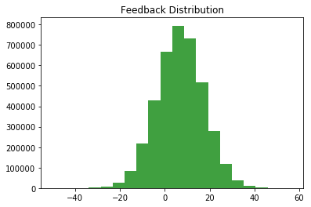
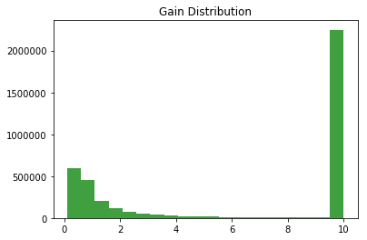
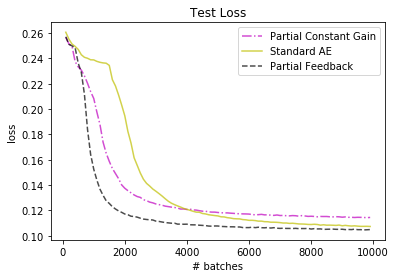
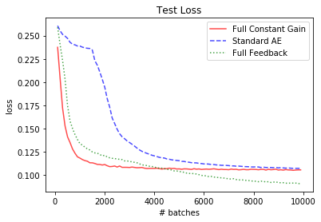
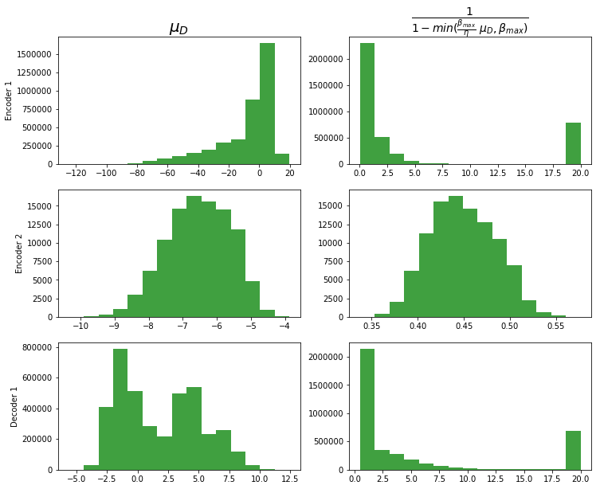

Are we just learning a constant gain?
Visualising the distributions of feedback and gain for the MNIST autoencoder with partial feedback, we might suspect that we are simply learning a constant gain:


(beta_max: 0.9, eta: 5)
(where \(\mu_D\) is the feedback and \(\frac{1}{1 - min(\frac{\beta_{max}}{\eta} \ (\mu_D), \beta_{max})}\) is the gain)
Since most of the gain values are around 10, it is questionable whether the learned feedback would differ much from simply setting the gain of every
ReLu to 10. The following figure shows the results of using a constant gain:

The constant gain clearly underperforms compared to the actual feedback mechanism, but, in the first half of training, it can indeed achieve faster convergence
than the standard autoencoder. In later stages, however, it is not able to match the performance of the standard autoencoder. This might be because it is a very
crude approximation of the learned feedback which may help in the beginning of training, but not towards the end, as more nuanced feedback is required.
The experiment is repeated with full feedback (and full constant gain, respectively). Again, a constant gain of 10 is used:

This time, the constant gain network even manages to outperform the feedback network in the beginnings of training. In later stages, it cannot outperform the feedback
network anymore but is on par with the standard autoencoder.
Of course, we have not looked at the learned feedback distributions for the network with full feedback, so a constant gain of 10 may be a flawed assumption.
The distributions for each layer that receives feedback are visualised as histograms below:
